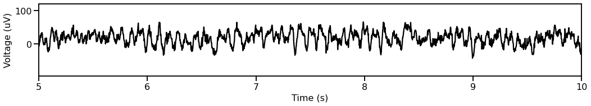
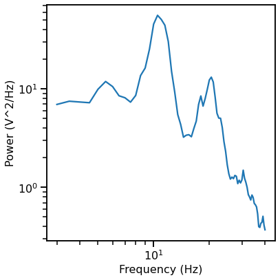
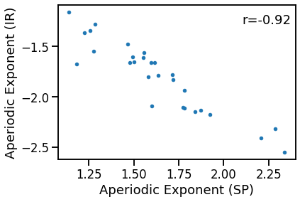
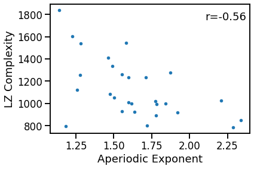
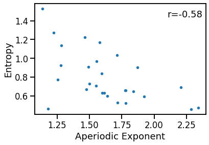

Resting EEG Data¶
This notebook ….
Dataset Details¶
Words, words, words.
import os
from pathlib import Path
import numpy as np
from scipy.io import loadmat
import matplotlib.pyplot as plt
from antropy import app_entropy
from fooof import FOOOF
from fooof.utils import trim_spectrum
from neurodsp.utils import create_times
from neurodsp.spectral import compute_spectrum
from neurodsp.plts import plot_time_series, plot_power_spectra
from bootstrap import bootstrap_corr
# Import custom code
import sys
sys.path.append(str(Path('..').resolve()))
from apm.run import run_measures
from apm.plts import plot_dots
from apm.utils import format_corr
from apm.methods import specparam, lempelziv, hjorth_complexity, dfa, hurst, irasa
Settings¶
# Define the data folder
folder = Path('/Users/tom/Documents/Data/VoytekLab/ExtractedSubsets/eeg_data')
# Define data field to extract from files
data_field = 'oz_rest_data'
# Get the list of available files
files = os.listdir(folder)
files = sorted([file for file in files if file.split('.')[-1] == 'mat'])
# FIX: temporarily drop subject which has a data quirk (wrong size array)
files = [file for file in files if '1009' not in file]
# Check the number of subjects
n_subjs = len(files)
print('Number of subjects: {}'.format(n_subjs))
Number of subjects: 28
# Define data information
fs = 500
n_seconds = 120
# Define times vector for data
times = create_times(n_seconds, fs)
Load Data¶
# Collect and load all data segments
data = []
for file in files:
loaded = loadmat(folder / file, squeeze_me=True)
data.append(loaded[data_field])
data = np.array(data)
Data Checks¶
# Plot a segment of time series data
plot_time_series(times, data[0, :], xlim=[5, 10])

# Compute a power spectrum of an example
freqs, powers = compute_spectrum(data[0, :], fs, nperseg=2*fs, noverlap=fs)
# Plot the power spectrum of the example data segment
plot_power_spectra(*trim_spectrum(freqs, powers, [3, 40]))

Compare Methods¶
# General method settings
f_range = [3, 40]
# Initialize specparam model
fm = FOOOF(verbose=False)
# Define measures to apply
measures = {
specparam : {'fs' : fs, 'f_range' : f_range},
irasa : {'fs' : fs, 'f_range' : f_range},
hurst : {'fs' : fs},
dfa : {'fs' : fs},
lempelziv : {},
hjorth_complexity : {},
app_entropy : {}
}
# Compute measures of interest on the data
outputs = run_measures(data, measures)
Compare Exponent Measures¶
# Plot the comparison of specparam and IRASA exponent estimations
plot_dots(outputs['specparam'], outputs['irasa'],
xlabel='Aperiodic Exponent (SP)', ylabel='Aperiodic Exponent (IR)')

# Check the correlation
sp_ir_corrs = bootstrap_corr(outputs['specparam'], outputs['irasa'])
print(' SP & IR: ', format_corr(*sp_ir_corrs))
SP & IR: r=-0.920 CI[-0.980, -0.764], p=0.000
Compare exponent to LZ Complexity¶
# Plot the comparison of specparam and lempel-ziv complexity
plot_dots(outputs['specparam'], outputs['lempelziv'],
xlabel='Aperiodic Exponent', ylabel='LZ Complexity')

# Check the correlation
exp_lzc_corrs = bootstrap_corr(outputs['specparam'], outputs['lempelziv'])
print(' EXP & LZC: ', format_corr(*sp_ir_corrs))
EXP & LZC: r=-0.920 CI[-0.980, -0.764], p=0.000
Compare exponent to entropy¶
# Plot the comparison of specparam and approximate entropy
plot_dots(outputs['specparam'], outputs['app_entropy'],
xlabel='Aperiodic Exponent', ylabel='Entropy')

# Check the correlation
exp_ent_corrs = bootstrap_corr(outputs['specparam'], outputs['app_entropy'],)
print(' EXP & ENT: ', format_corr(*exp_ent_corrs))
EXP & ENT: r=-0.577 CI[-0.843, -0.178], p=0.001
Conclusions¶
Words, words, words.